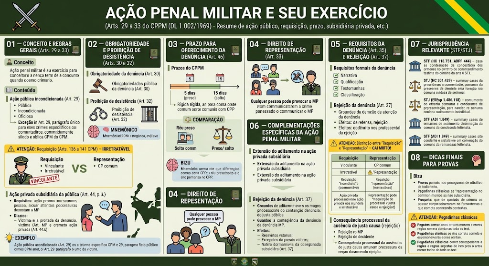

O que é a ação penal militar?
O que é a ação penal militar?
A ação penal militar é o instrumento processual pelo qual o Estado (representado pelo Ministério Público Militar) busca a aplicação da lei penal militar ao autor de um crime. No processo penal militar, a ação é regida por regras próprias, previstas no Código de Processo Penal Militar (CPPM – DL 1.002/1969).
Regra geral: ação pública incondicionada (Art. 29)
Regra geral: ação pública incondicionada (Art. 29)
Art. 29, caput: 'A ação penal militar é pública, promovida por denúncia do Ministério Público Militar.'
Características:
- Pública: o MP Militar é o titular exclusivo da ação;
- Incondicionada: não depende de autorização, representação ou requisição (regra geral);
- Oficiosa: pode ser iniciada de ofício pelo MP, desde que haja justa causa.
Exceção (Art. 29, parágrafo único): Nos crimes dos Arts. 136 a 141 do Código Penal Militar (CPM), a ação penal depende de requisição do Ministro da Defesa ou do Comandante Militar (não é representação da vítima, mas sim uma ordem administrativa).
⚠️ Requisição (Arts. 136 a 141 do CPM) – IRRETRATÁVEL
⚠️ Requisição (Arts. 136 a 141 do CPM) – IRRETRATÁVEL
Nos crimes previstos nos Arts. 136 a 141 do CPM (crimes contra a segurança externa do país, contra autoridades estrangeiras, etc.), a ação penal depende de requisição do Ministro da Defesa ou do Comandante Militar.
Natureza da requisição:
- É condição de procedibilidade – sem ela, a ação penal não pode ser iniciada;
- É irretratável – uma vez expedida, não pode ser revogada;
- É vinculante – o Ministério Público Militar não tem discricionariedade para recusar a denúncia. Deve oferecê-la, desde que haja justa causa.
Distinção crucial: A requisição é uma ordem administrativa de autoridade superior (Ministro da Defesa ou Comandante Militar), NÃO se confunde com a representação da vítima. A vontade da vítima particular não tem o condão de iniciar ou barrar a persecução nesses casos.
⚠️ Pegadinha: A banca afirma que a requisição é uma mera sugestão e o MP pode deixar de denunciar – ERRADO. É vinculante e irretratável!
Ação privada subsidiária da pública (Art. 44, p.ú.)
Ação privada subsidiária da pública (Art. 44, p.ú.)
O CPPM também admite a ação privada subsidiária da pública, quando o Ministério Público Militar não oferece denúncia no prazo legal (desídia, inércia injustificada).
Requisitos:
- O MP deve ter deixado de oferecer a denúncia dentro do prazo (5 dias para réu preso; 15 para réu solto);
- A vítima ou seu representante legal pode oferecer queixa (ação privada) no prazo de 60 dias (contados do término do prazo do MP);
- A queixa deve ser instruída com os mesmos requisitos da denúncia.
Atuação do Ministério Público Militar (MPM) na subsidiária – ATIVA!
No processo penal militar, se o MPM ficar inerte e a vítima propor a ação penal privada subsidiária da pública, o MPM não assume uma postura passiva. Ele pode (e deve) intervir ativamente:
- Aditar a queixa – complementando ou corrigindo a acusação;
- Repudiar a queixa – se entender que é caso de arquivamento (ausência de justa causa);
- Fornecer elementos de prova – para auxiliar a instrução;
- Interpor recursos – como fiscal da lei;
- Retomar a titularidade da ação – em caso de negligência (desídia) do querelante (vítima), reassumindo a condução do processo.
Efeito prático: o MPM não é um mero espectador – ele fiscaliza e pode retomar o processo se a vítima abandonar a causa.
📌 Dica: A banca pode afirmar que o MPM fica inerte na ação privada subsidiária – ERRADO. Ele atua ativamente.
Efeito: uma vez oferecida a queixa, o MP não pode mais se manifestar no processo (substituição processual), salvo se retomar a titularidade por desídia do querelante.
📌 Dica: A ação privada subsidiária é uma garantia contra a inércia do MP, mas é excepcional – a regra é a ação pública.
Situação prática
Situação prática
Um soldado é acusado de furto. O IPM é concluído e os autos são remetidos ao MPM. O indiciado está preso. O MPM tem 5 dias para oferecer denúncia. Se não o fizer, a vítima pode oferecer queixa subsidiária no prazo de 60 dias. Se a vítima oferecer a queixa e depois abandonar o processo, o MPM pode retomar a titularidade.
Obrigatoriedade da denúncia (Art. 30)
Obrigatoriedade da denúncia (Art. 30)
Art. 30: 'O Ministério Público Militar oferecerá denúncia quando houver prova da existência do fato típico e indícios suficientes de autoria.'
Regra: o MP é obrigado a denunciar se estiverem presentes:
- Prova da existência do fato (materialidade);
- Indícios suficientes de autoria (elementos que indiquem quem cometeu o crime).
Se esses requisitos não estiverem presentes, o MP deve promover o arquivamento (com fundamentação) ou requisitar diligências complementares.
⚠️ Pegadinha: O MP não pode denunciar com base em meras suspeitas – exige-se lastro probatório mínimo (justa causa).
Proibição de desistência (Art. 32)
Proibição de desistência (Art. 32)
Art. 32: 'Apresentada a denúncia, não poderá o Ministério Público Militar desistir da ação penal, sem prejuízo da faculdade de promover a absolvição do acusado.'
Regra: uma vez oferecida a denúncia, o MP não pode desistir da ação penal. O processo deve prosseguir até o julgamento final.
Exceção (implícita): O MP pode, no curso do processo, pedir a absolvição do réu se as provas não confirmarem a acusação – mas isso não é desistência, é uma manifestação de mérito.
🧠 Mnemônico: “Denúncia dada, ação é eterna – MP não pode voltar atrás.”
Prazos do CPPM – DIFERENÇA CRUCIAL
Prazos do CPPM – DIFERENÇA CRUCIAL
O CPPM estabelece prazos específicos para o oferecimento da denúncia, que diferem do CPP comum (onde é 5 dias para réu preso e 15 para solto, mas com interpretações distintas). No CPPM, a regra é mais rígida:
Art. 46, alínea 'a': Se o indiciado estiver preso, o prazo para denúncia é de 5 (cinco) dias a contar do recebimento dos autos do IPM.
- Natureza: é um prazo rigoroso, pois o réu está custodiado.
- Consequência do descumprimento: o juiz pode relaxar a prisão ou o MP perde a prioridade (a vítima pode oferecer queixa subsidiária).
Art. 46, alínea 'b': Se o indiciado estiver solto, o prazo para denúncia é de 15 (quinze) dias a contar do recebimento dos autos do IPM.
- Prorrogação: o prazo pode ser prorrogado por igual período, mediante despacho fundamentado do juiz, se houver necessidade de diligências imprescindíveis.
⚠️ Pegadinha Clássica: A banca pode afirmar que o prazo para denúncia no CPPM é sempre de 5 dias (confundindo com o CPP comum) – ERRADO. A regra dos 5 dias é para réu preso; para réu solto é 15 dias.
Mnemônico dos prazos
Mnemônico dos prazos
📌 “Preso = 5 (P5) / Solto = 15 (S15)”
🧠 Lembrete: O prazo começa a contar do recebimento dos autos pelo MPM, não da conclusão do IPM.
Qualquer pessoa pode provocar o MP (Art. 33)
Qualquer pessoa pode provocar o MP (Art. 33)
Art. 33: 'Qualquer pessoa poderá provocar a iniciativa do Ministério Público Militar, dando-lhe informações sobre a existência de crime e a respectiva autoria.'
Regra: qualquer pessoa (física ou jurídica) pode comunicar ao MP a ocorrência de um crime militar, para que ele tome as providências cabíveis.
Natureza: é um direito do cidadão, mas não obriga o MP a oferecer denúncia – cabe ao MP avaliar a justa causa.
Exemplo: Um cidadão presencia um militar cometendo um crime e comunica ao MPM, que pode instaurar procedimento investigatório.
Requisitos formais da denúncia (Art. 35)
Requisitos formais da denúncia (Art. 35)
Art. 35: 'A denúncia conterá a exposição do fato criminoso, com todas as suas circunstâncias, a qualificação do acusado ou, quando possível, os elementos que a identifiquem, o rol de testemunhas e a classificação do crime.'
Requisitos essenciais:
- Narrativa clara do fato – com todas as circunstâncias de tempo, lugar, modo e motivo;
- Qualificação do acusado – nome, posto/graduação (se militar), dados pessoais;
- Rol de testemunhas – com limites por tipo de conselho (máximo de 8 para Conselho Especial, e 3 para Conselho Permanente, por exemplo – Art. 63, caput, CPPM);
- Classificação do crime – indicação do dispositivo legal infringido.
📌 Dica: A falta de qualquer requisito essencial pode levar à rejeição da denúncia.
Rejeição da denúncia (Art. 37)
Rejeição da denúncia (Art. 37)
Art. 37: 'O juiz, ao receber a denúncia, verificará se estão presentes os requisitos legais. Em caso negativo, rejeitará a denúncia.'
Hipóteses de rejeição:
- Falta de justa causa (ausência de provas ou indícios);
- Ilegitimidade do MP;
- Ausência de requisitos formais (Art. 35);
- Extinção da punibilidade (prescrição, morte, etc.).
Efeito: a rejeição não faz coisa julgada material – o MP pode oferecer nova denúncia se sanar os vícios (dentro do prazo prescricional). A rejeição por falta de justa causa não impede novo oferecimento se surgirem novas provas.
⚠️ Pegadinha: A rejeição da denúncia por falta de justa causa não impede o MP de oferecer nova denúncia depois, se obtiver os elementos faltantes.
Extensão do aditamento na ação privada subsidiária
Extensão do aditamento na ação privada subsidiária
No processo penal militar, se o Ministério Público Militar (MPM) ficar inerte e a vítima propor a ação penal privada subsidiária da pública, o MPM não assume apenas uma postura passiva. Ele pode (e deve) intervir, sendo permitido:
- Aditar a queixa – complementando ou corrigindo a acusação;
- Repudiar a queixa – se entender que é caso de arquivamento;
- Fornecer elementos de prova – para auxiliar a instrução;
- Interpor recursos – como fiscal da lei;
- Retomar a titularidade da ação – em caso de negligência (desídia) do querelante (vítima), reassumindo a condução do processo.
📌 Dica: A atuação do MPM na subsidiária é ativa, não passiva. Ele fiscaliza e pode retomar o processo se a vítima abandonar a causa.
Distinção entre \"Requisição\" e \"Representação\" – CAI MUITO!
Distinção entre \"Requisição\" e \"Representação\" – CAI MUITO!
A regra geral no direito penal militar é a ação pública incondicionada. Quando há exceção, ela exige requisição, e NÃO representação da vítima.
Requisição (Arts. 136 a 141 do CPM):
- É uma ordem administrativa de autoridade superior (Ministro da Defesa ou Comandante Militar);
- É irretratável – uma vez expedida, não pode ser revogada;
- É vinculante – o MPM deve denunciar, se houver justa causa;
- A vontade da vítima particular não tem o condão de iniciar ou barrar a persecução nesses casos.
Representação (CPP comum):
- É a manifestação de vontade da vítima ou de seu representante legal;
- É retratável – pode ser revogada antes do oferecimento da denúncia;
- O MP pode denunciar, mas não está obrigado (tem margem de discricionariedade).
⚠️ Pegadinha: A banca pode confundir os institutos – lembre-se: no processo penal militar, a exceção é sempre requisição (ordem superior), nunca representação da vítima.
Consequência processual da ausência de justa causa
Consequência processual da ausência de justa causa
O Art. 30 do CPPM exige prova da existência do fato típico e indícios suficientes de autoria (justa causa). Se o juiz verificar que a denúncia foi oferecida sem esse suporte probatório mínimo, ele rejeitará a denúncia (Art. 37).
Efeito: a decisão de rejeição por falta de justa causa não faz coisa julgada material, permitindo que o MPM ofereça uma nova denúncia assim que obtiver os elementos que faltavam, desde que o crime não esteja prescrito.
📌 Dica: A rejeição por falta de justa causa não é definitiva – o MP pode tentar novamente com novas provas.
Entendimentos consolidados
Entendimentos consolidados
Os tribunais superiores já pacificaram importantes teses sobre a ação penal militar:
Pegadinhas e pontos-chave
Pegadinhas e pontos-chave
📌 Art. 29: ação pública incondicionada (regra); exceção: arts. 136 a 141 CPM (requisição).
📌 Requisição: irretratável, vinculante – MP deve denunciar.
📌 Art. 30: MP denuncia se houver prova do fato e indícios de autoria.
📌 Art. 32: MP não pode desistir da denúncia.
📌 Art. 33: qualquer pessoa pode provocar o MP.
📌 Prazo para denúncia (Art. 46): 5 dias (réu preso) / 15 dias (réu solto).
📌 Ação privada subsidiária: se MP não denuncia no prazo, vítima pode oferecer queixa em 60 dias.
📌 MP na subsidiária: pode aditar, repudiar, intervir e retomar a titularidade em caso de desídia.
📌 Distinção: requisição (ordem superior) ≠ representação (vítima).
📌 Requisitos da denúncia (Art. 35): narrativa, qualificação, testemunhas, classificação.
📌 Rejeição (Art. 37): pode ser sanada com nova denúncia (não faz coisa julgada material).
Pegadinhas clássicas
Pegadinhas clássicas
❌ 'A requisição é uma mera sugestão ao MP.' → ERRADO (é vinculante e irretratável).
❌ 'O prazo para denúncia no CPPM é sempre de 5 dias.' → ERRADO (5 dias para preso; 15 para solto).
❌ 'A rejeição da denúncia por falta de justa causa impede nova denúncia.' → ERRADO (pode ser reoferecida com novas provas).
❌ 'Na ação privada subsidiária, o MP atua passivamente.' → ERRADO (atua ativamente, pode aditar e retomar a titularidade).
❌ 'A representação da vítima é a exceção no processo penal militar.' → ERRADO (a exceção é a requisição, não representação).
Mapa-mental – Ação Penal Militar
Material de estudo: Ação Penal Militar e seu exercício
Material complementar · Ver fonte no GitHub
03 — Prazo para Oferecimento da Denúncia (Art. 46)
Comparação: CPPM x CPP comum
| Critério | CPPM (Militar) | CPP (Comum) |
|---|---|---|
| Réu preso | 5 dias (Art. 46, a) | 5 dias (Art. 46, CPP) |
| Réu solto | 15 dias (Art. 46, b) | 15 dias (Art. 46, CPP) |
| Prorrogação | Possível, com fundamento | Possível, com fundamento |
| Efeito do descumprimento | Relaxamento da prisão; queixa subsidiária | Relaxamento da prisão; queixa subsidiária |
07 — Jurisprudência Relevante (STF/STJ)
Entendimentos consolidados
Os tribunais superiores já pacificaram importantes teses sobre a ação penal militar:
- STF (HC 118.751): A condução coercitiva para interrogatório é inconstitucional, inclusive no âmbito militar (ADPF 444), salvo se houver ordem judicial para condução com fundamento em prisão preventiva ou flagrante.
- STJ (HC 301.429): A prisão temporária é aplicável no processo penal militar, desde que observados os requisitos da Lei 7.960/89 e os prazos do CPPM.
- STJ (EREsp 1.486.118): A suspensão condicional do processo (art. 89 da Lei 9.099/95) não é aplicável ao processo penal militar, por ausência de previsão legal e incompatibilidade com o rito castrense.
- STF (ADI 1.849): A incomunicabilidade do preso militar foi revogada (Lei 8.072/90, art. 18), garantindo-se o contato com advogado e familiares.
- STJ: A denúncia militar deve ser rejeitada se não houver justa causa, mas a rejeição não impede nova denúncia com fundamentos novos.
08 — Dicas Finais para Provas
Mapa-mental – Ação Penal Militar
